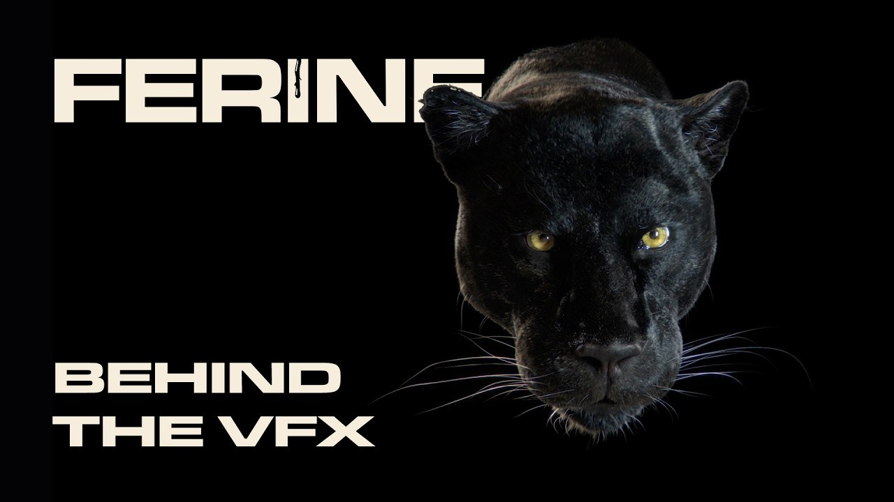
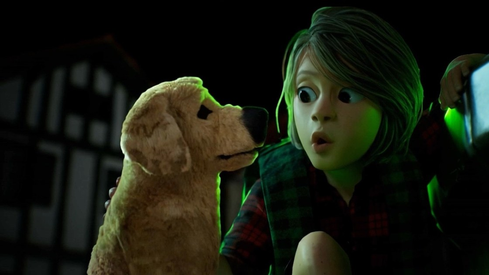
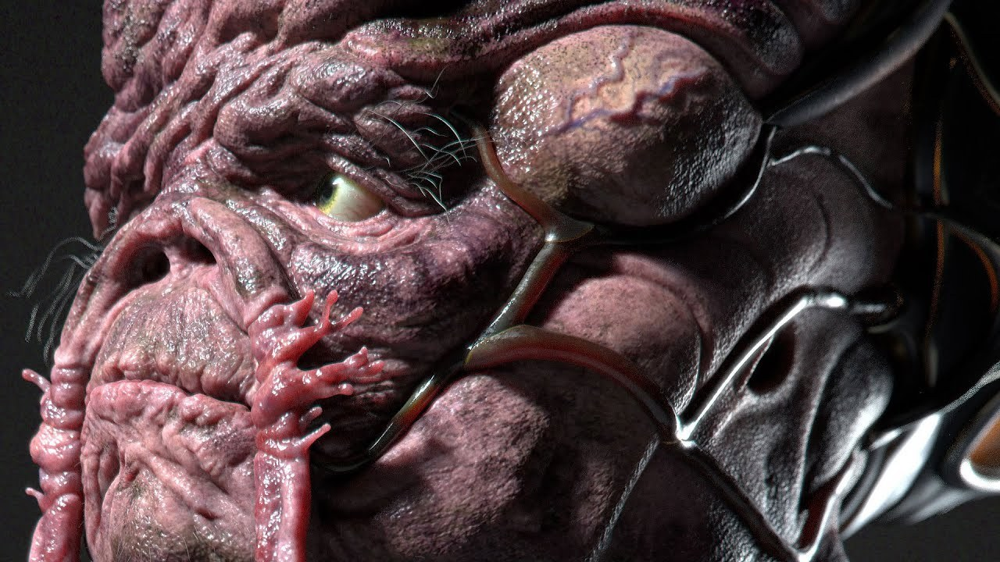
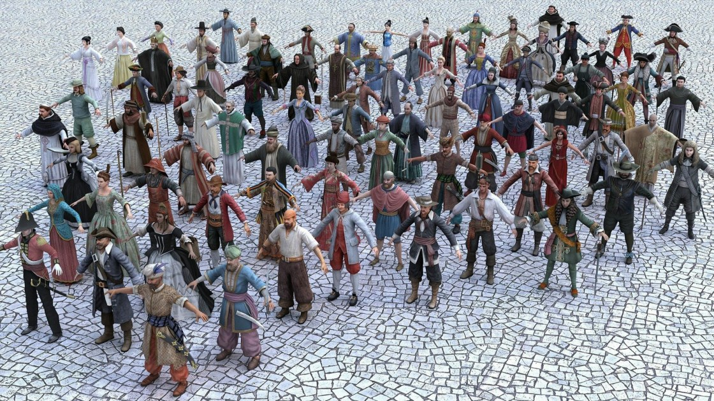
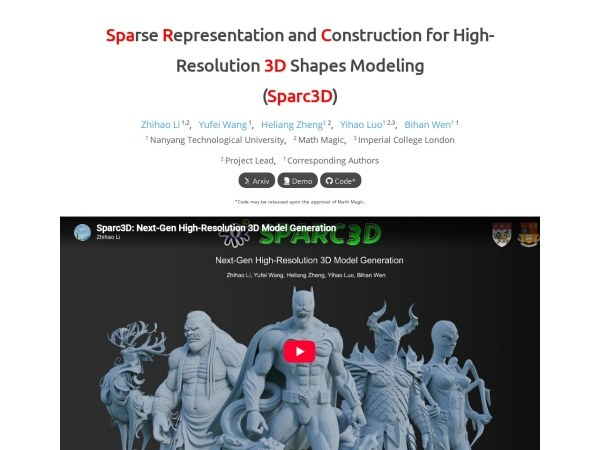
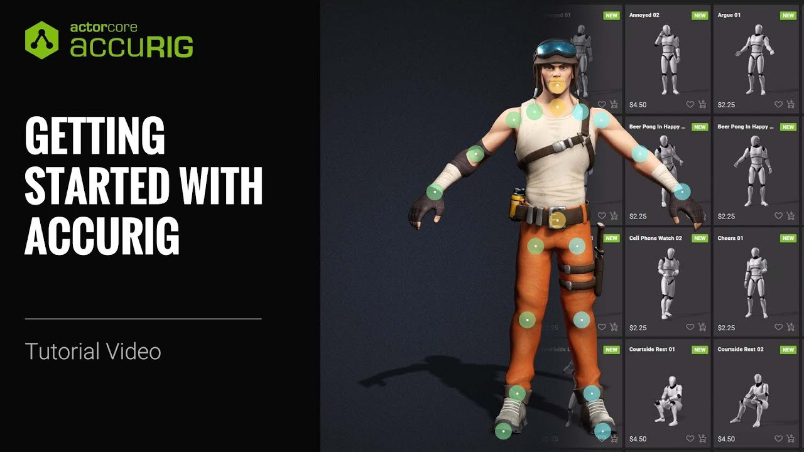
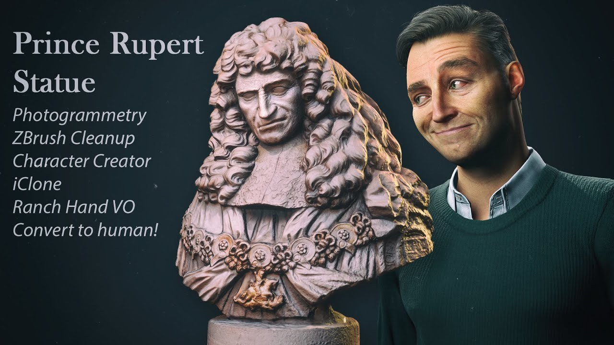

#02 · character-production
《Ferine》黑色美洲豹特效：毛髮、組織模擬與夜景可讀性
EDI 公開《Ferine》美洲豹的特效拆解，從概念、綁定、組織模擬與毛髮梳理一路展示到成片；黑色毛皮在夜景中仍需清楚可見，是主要著色挑戰。

SOURCE PREVIEW
· Local visual evidence · 點圖開啟原始來源
角色製作 ★★★★★
完整分析
角色流程：寫實外觀也要傳達情緒
製作目標不只逼真，還要求美洲豹能與主演產生情感交流；拆解涵蓋概念到最終影像，並短暫展示 Maya 內的綁定、組織模擬及毛髮梳理等環節。
製作影響：黑毛需要現場照明參考
黑色毛皮在夜景的辨識度使著色器開發成為重要課題；團隊在現場使用多色毛球作燈光參考。推論：這提供了實拍照明與數位毛髮外觀之間的比對依據。
證據限制：拆解未公開完整技術設定
報導提供有旁白的製作影片及較短的無旁白剪輯，但其他技術資訊欄明確寫尚無資料；因此可確認製作環節，不能據此補寫模擬參數、渲染器或具體效能數字。
BRIEF｜來源已驗證；證據深度較有限，完整分析會明確區分已知資訊與待驗證事項。
來源 ↗
#04 · character-production
Adur 小團隊角色流程：CC5 塑形、iClone 動作與 Unreal 即時預覽
供應商案例介紹四人團隊如何製作《Adur》的木偶風格角色與過場：先以 CC5 混合身形和臉部比例，再用 iClone 8 修動作，送入 UE5 檢查最終光照下的表現。

SOURCE PREVIEW
· Local visual evidence · 點圖開啟原始來源
角色製作 ★★★★☆
完整分析
角色技術：比例與材質共同塑造風格
團隊以 ActorMixer 混合身體和臉部比例，結合黏土材質、皮膚細節與次表面散射；再透過 Auto Setup 與 Unreal 後製遮罩，塑造主角的停格感及反派的刻畫塗鴉外觀。
製作流程：在最終光照下修動作
iClone 的多層時間軸用於表情、IK/FK 切換及滑步修正，Live Link 將動作送入 Unreal 調整構圖；之後烘焙供 Animation Blueprint 使用，或透過 Sequencer 的 Take Recorder 記錄。
證據限制：效率數字屬團隊自述
訪談描述可快速嘗試十至二十次表演版本，屬這個四人團隊在既定工具組合中的經驗；文章由 Reallusion 案例出發，並非不同工具的獨立比較，不能推定任何小團隊都會得到相同效率。
BRIEF｜來源已驗證；證據深度較有限，完整分析會明確區分已知資訊與待驗證事項。
來源 ↗
#07 · character-production
歷史參考｜生物胸像課程：從 Krita 設計到 Maya 綁定與 Karma 渲染
2022 年 Pascal Raimbault 的生物胸像教學，將二維設計、ZBrush 雕刻、Maya 拓樸與 UV、Painter 貼圖，以及 Houdini Solaris 外觀開發串成製作流程。

SOURCE PREVIEW
· Local visual evidence · 點圖開啟原始來源
角色製作 ★★★★☆
完整分析
角色流程：概念與可交接模型並進
課程從 Krita 設計開始，進入 Maya 與 ZBrush 建模，處理皮膚雕刻、拓樸重整和 UV；服裝硬表面部分利用 ZBrush Polygroups 細化，目標是交給後續部門處理。
製作整合：貼圖、姿勢與渲染分工
模型在 Substance 3D Painter 著色，Houdini Solaris 處理外觀開發，再由 Maya 綁定，準備擺姿勢並以 Karma 渲染；最後以 Houdini 的基本合成處理完成高解析影像。
資源限制：練習檔不是整套成品資產
當時可下載的是 ZBrush 2022 的高解析皮膚雕刻與早期服裝版本，不能當成全部軟體的完整場景；報導也揭露 CG Channel 隸屬 Gnomon，應把內容視為課程介紹。
BRIEF｜來源已驗證；證據深度較有限，完整分析會明確區分已知資訊與待驗證事項。
來源 ↗
#08 · character-production
獨立遊戲角色案例：預設塑形、影片動捕與高低模分工
2026 年的 Reallusion 案例彙整，介紹小團隊以 Character Creator 與 iClone 製作角色，涵蓋 Unity 過場、船長外觀變化及 Unreal Engine 的背景 NPC 動畫。

SOURCE PREVIEW
· Local visual evidence · 點圖開啟原始來源
角色製作 ★★★☆☆
完整分析
角色流程：素材組合接上引擎輸出
Dragon Level Studio 以現有資產、形變系統與服裝貼合工具建立角色，動畫混合 Rokoko、Mixamo 及素材庫；對白在 iClone 處理，再用 Auto Setup 匯入 Unity。
製作控制：近景與群眾分開準備
Tijerín 為 NPC 保留近景高細節版與群眾減面版；手機錄影轉成基礎動作後，仍在 iClone 修關節抖動及腳部接觸，必要時混入 ActorCore 動作，持續用原片核對節奏。
驗證限制：節省工期不是通用基準
原文彙整自供應商刊物，七個月節省與五至十倍加速分別是不同團隊的估計，不能相加或視為同一測試；影片動捕案例也明確包含人工清理，並非生成後直接交付。
BRIEF｜來源已驗證；證據深度較有限，完整分析會明確區分已知資訊與待驗證事項。
來源 ↗
#11 · production-workflow
歷史參考｜Sparc3D：用稀疏幾何表示與 VAE 處理影像生成形狀
2025 年 Sparc3D 研究介紹，將可變形稀疏 marching cubes 表示與稀疏卷積 VAE 結合，針對單張影像生成三維形狀時的細節損失提出方法。

SOURCE PREVIEW
· Local visual evidence · 點圖開啟原始來源
製作流程 ★★★☆☆
完整分析
生成技術：幾何表示與壓縮共同設計
Sparcubes 把帶符號距離與變形資訊放入稀疏立方格，Sparconv-VAE 則以稀疏卷積處理壓縮表示；來源把兩者整合，對應傳統 VAE 壓縮與擴散生成之間的細節流失問題。
製作潛力：關注複雜形狀的保存
介紹展示高解析表面與複雜幾何的重建方向，並宣稱可輸出封閉網格供列印；推論：對細部形狀敏感的概念模型具有參考價值，但這不等同已取得動畫用拓樸或完整角色資產。
證據限制：解析度不是品質保證
原文分別列出 1024³ 表面表示與最高 1536³ 體素示例，兩者應保留各自脈絡；本文僅有研究介紹，不能把高解析或封閉網格宣稱延伸成所有輸入都可直接列印、無須檢查。
BRIEF｜來源已驗證；證據深度較有限，完整分析會明確區分已知資訊與待驗證事項。
來源 ↗
#12 · character-production
歷史參考｜AccuRig：人形模型自動綁定與姿勢偏移修正
2022 年 AccuRig 發布介紹以自動關節分析和蒙皮協助人形模型綁定，支援不同起始姿勢，並可將結果送往 ActorCore 或輸出至其他製作工具。

SOURCE PREVIEW
· Local visual evidence · 點圖開啟原始來源
角色製作 ★★★☆☆
完整分析
綁定技術：處理多種起始姿勢
介紹列出 A、T 和掃描姿勢，以及低模、高模和多網格模型；針對掃描人物的掌心方向與抬臂角度，工具分析關節並修正軸向，另提供關節微調。
製作控制：重定向後修正肢體位置
Pose Offset 用於不同身形套用動畫後的手臂穿插或腿部間距問題；角色可在 ActorCore 試套動作，再用 FBX、USD 或 iAvatar 等格式輸出，銜接後續動畫流程。
相容性限制：保留當時平台與登入條件
2022 年介紹列為 Windows 應用，且輸出需要登入帳號；這些是當年的使用條件，不能由舊文推定今天支援平台，也不能把自動分析描述成所有模型皆不需修整。
BRIEF｜來源已驗證；證據深度較有限，完整分析會明確區分已知資訊與待驗證事項。
來源 ↗
#13 · character-production
歷史參考｜讓雕像開口：攝影測量、頭部拓樸轉換與自訂表情
2023 年 Michael Pavlovich 的贊助案例，將魯珀特王子胸像照片透過 Metashape 重建，再用 Headshot 2.0、ZBrush Face Tools 與 iClone 製作可動表情。

SOURCE PREVIEW
· Local visual evidence · 點圖開啟原始來源
角色製作 ★★★☆☆
完整分析
角色流程：掃描臉部接上動畫拓樸
作者先用照片在 Metashape 重建胸像、進 ZBrush 修整，切出需要動畫的臉部；Headshot 2.0 的 Mesh Workflow 將它包覆到 Character Creator 可供動畫使用的拓樸，再送回雕刻。
製作控制：表情雕刻連動皺紋貼圖
Face Tools 可把 Character Creator 的既有核心表情送入 ZBrush 修改，並從高細分雕刻產生皺紋貼圖，供動態皺紋系統使用；修好的臉接回胸像後即可預覽自訂表情。
導入限制：動捕另依賴手機與配套工具
案例的即時表情使用 iPhone 的 Live Face 與 TrueDepth，把資料串流至工作站上的 iClone，並提供平滑及多次錄製功能；這是多個工具共同完成的贊助示範，不能當成僅匯入掃描檔就自動產生完整動畫。
BRIEF｜來源已驗證；證據深度較有限，完整分析會明確區分已知資訊與待驗證事項。
來源 ↗
#14 · character-production
歷史參考｜寫實肖像工作法：先建立面部大形，再以不同光照檢驗
2022 年 Şefki Ibrahim 與 Adam Spring 分享寫實肖像製作，從多角度、相近年齡的參考開始，逐步雕刻與修整掃描貼圖，再以不同燈光檢驗相似度。
SOURCE CARD
· Generated source card · 點圖開啟原始來源
角色製作 ★★★☆☆
完整分析
角色技術：主要形體先於皮膚細節
兩位作者先研究頭骨、臉部地標、距離與角度，再加入次要皺紋和毛孔；參考應注意人物年齡，並以輪廓與面部平面檢查形體，避免精細表面掩蓋比例問題。
貼圖製作：掃描資料仍要依對象修整
投射 Texturing.xyz 資料後，Ibrahim 在 Mari 補畫雀斑、眼圈與泛紅，再到 Maya、Arnold 反覆渲染；Spring 也說明掃描色彩轉入自己的 UV 後，需清除毛髮及烘進去的光照痕跡。
驗證方法：不要只用討喜的燈光
Ibrahim 建議在簡單光源或不同 HDRI 下測試，留意光源大小、距離與曝光如何改變皮膚觀感；也刻意使用不討喜的照明暴露模型與貼圖問題，再回頭修整，而非只靠最終美化光照判斷。
BRIEF｜來源已驗證；證據深度較有限，完整分析會明確區分已知資訊與待驗證事項。
來源 ↗